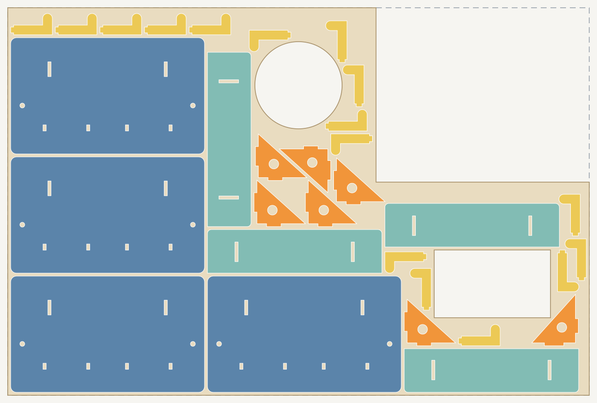
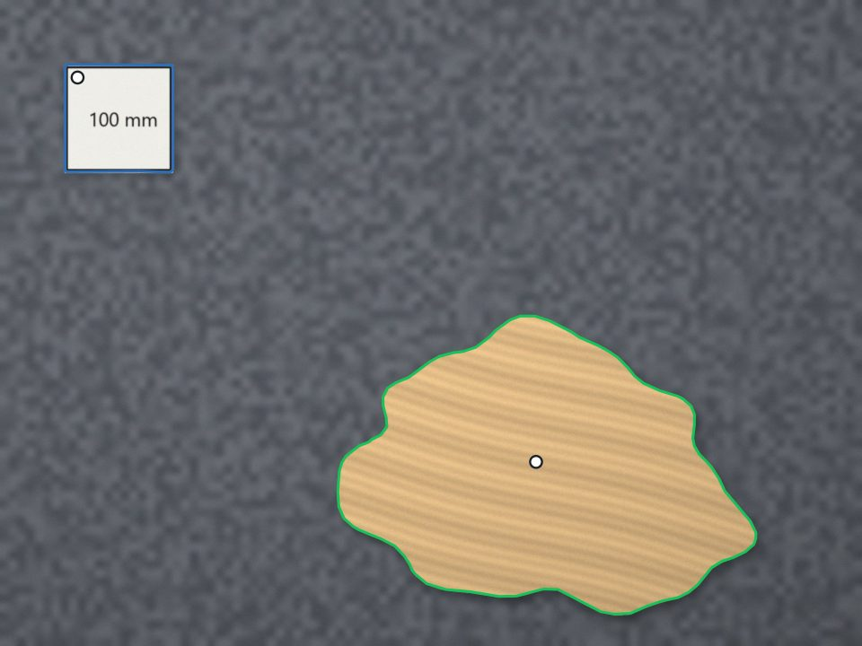
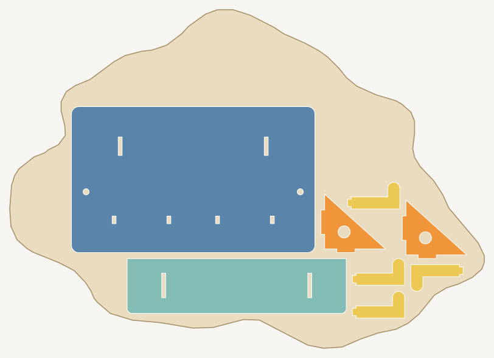

Nest parts onto a scrap or offcut
A partly used sheet or an odd-shaped offcut is material you have already paid for. Nestbolt can use the remnant's own outline as the sheet: draw the usable material on a layer named SHEET, with holes where parts were already cut, and Nestbolt nests inside that shape. This page shows two measured jobs. In the first, a partly used sheet is drawn by hand and Nestbolt places as many parts as fit. In the second, the outline of an irregular offcut is traced from a picture with Maskbolt, an open-source image tool by the same author. That picture is a computer render made for this test, not a phone photo; see the limits.
Free and MIT-licensed; your files never leave your computer.
Mark the remnant as the sheet
Draw the outline of the material you can still use, as a closed shape in an SVG or DXF file, on a layer named SHEET (in SVG, a group with id="SHEET"). Closed shapes inside it are holes in the stock, such as places where parts were already cut out. When you import the file, Nestbolt lists that outline under sheet_outlines with an ID such as partly-used-sheet-sheet-1. A request then uses it as the sheet with {"from_import": "partly-used-sheet-sheet-1", "count": 1}; Nestbolt's import guide explains the details. The import also lists the outline itself as a part (partly-used-sheet-1), so name only the parts you want cut in the request.
In the browser app, choose the drawing under Remnant outline, or pick Imported sheet outline for a sheet size. Its Fill the sheets (most area) option is the fill_area mode used below. The numbers on this page come from the command-line tool.
Example 1: a partly used sheet, place what fits
The stock is a 600 × 400 mm sheet of 3 mm plywood. An earlier job has taken a 220 × 180 mm corner and cut out a 90 mm circle and a 120 × 70 mm rectangle. The parts are the 8-part key rack from the agent-drawn key rack example, four times over: 32 parts, which Nestbolt could not all fit on the remnant in 30 seconds. The request's mode is fill_area, which places as much part area as it can fit instead of refusing the job.
| Stock | One remnant from partly-used-sheet.svg: 600 × 400 mm minus a 220 × 180 mm corner, with two holes; 185,639 mm² of material |
|---|---|
| Parts | 4 key racks: 4 back plates, 4 shelves, 8 brackets, 16 hooks (32 parts) |
| Part spacing | 2 mm |
| Edge spacing | 3 mm, from the outline and from the holes |
| Allowed rotations | 0°, 90°, 180°, 270° |
| Mode | fill_area (place what fits) |
| Time budget | 30 seconds, repeatable mode |

Measured on 2026-10-25 with the nestbolt command-line tool built from main at 247e823, on a Windows desktop PC. Nestbolt placed 31 of the 32 parts on the remnant: 4 back plates, 4 shelves, 7 of the 8 brackets and all 16 hooks, with 77.7% utilisation (placed part area divided by the material used). The independent check: valid, and a separate nestbolt validate run agreed. With the default mode, which must place every part, the same request stopped with “could not place every part in 30 s: allow more time, more sheets or fewer parts”. fill_area counts area, not complete sets, so count the sets yourself: here, three complete racks and a fourth without one bracket.

main nested it on 2026-10-25: 31 of 32 parts, check valid. The dashed line marks the original sheet edge around the corner that was already used.Example 2: an offcut traced from a rendered picture
The picture is a render of a plywood offcut lying flat on a grey bench, seen from straight above, with a 100 × 100 mm card beside it. A script drew it for these tests at exactly 0.5 mm per pixel (1600 × 1200 pixels), with wood grain, shadows, blur, noise and JPEG compression. The script also kept the true outline, so the trace can be measured against it.
- Trace the card and the offcut. The Maskbolt v0.1.0 release (Windows x64, run on the CPU) cut out the card with one click and the offcut with another, and wrote each outline as SVG. Each command took 6 to 7 seconds on this PC.
- Find the scale. The card's outline in
card.svgencloses 39,612 square pixels (Maskbolt's reply counts 39,475 mask pixels; this page uses the outline), so one pixel is 100 mm ÷ √39,612 = 0.5024 mm, 0.49% more than the true 0.5 mm. - Convert to millimetres. Every point of the offcut's outline was multiplied by 0.5024 mm, moved to start at 0, 0, and saved as one path inside
<g id="SHEET">in an SVG sized in millimetres: traced-offcut.svg, 389.9 × 278.4 mm. - Nest. One key rack (8 parts) on the traced outline, with a 5 mm edge spacing to cover the tracing error, 2 mm between parts, quarter turns and a 30-second budget in repeatable mode.


Measured on 2026-10-25 against the render's true outline: the traced shape overlaps it with an intersection over union of 0.974. Points along the traced edge are a median of 1.8 mm from the true edge, 95% are within 3.4 mm, and the largest distance is 4.3 mm. The traced area is 71,385 mm² against 71,106 mm² true (0.4% more). Nestbolt, built from main at 247e823, placed 8 of 8 parts on the traced offcut with 60.0% utilisation; utilisation leaves out the unused strip above the parts, and the parts cover 50.6% of the whole offcut. The independent check: valid, and nestbolt validate agreed.

The commands
Example 1, in a new folder with key-rack.svg, partly-used-sheet.svg and partly-used-sheet-request.json:

nestbolt import key-rack.svg partly-used-sheet.svg --output library.jsonfound the 8 rack parts (and listed the outline as a part too) and offered one stock outline,partly-used-sheet-sheet-1.nestbolt nest --library library.json --request partly-used-sheet-request.json --out-dir out --seconds 30 --repeatablewrotesheet-0.svgandsheet-0.dxffor cutting, withlayout.jsonandreport.json.nestbolt validate --library library.json --request partly-used-sheet-request.json --layout out/layout.jsonreported the layout valid: no overlaps, nothing outside the stock and nothing closer than 3 mm to its edges or holes.
Example 2, in another new folder with key-rack.svg, offcut-render.jpg, traced-offcut.svg and traced-offcut-request.json:

maskbolt cutout offcut-render.jpg --point 144,144 --fill-holes --out card.png --svg card.svg(the card)maskbolt cutout offcut-render.jpg --point 995,858 --out offcut.png --svg offcut.svg(the offcut)- Scale
offcut.svgintotraced-offcut.svgas described above. nestbolt import key-rack.svg traced-offcut.svg --output library.json, thennestbolt nest --library library.json --request traced-offcut-request.json --out-dir out --seconds 30 --repeatableandnestbolt validate --library library.json --request traced-offcut-request.json --layout out/layout.json.
Each nest finished in about 3 seconds. In repeatable mode, the same inputs, budget and seed give the same layout on the same build and platform: two runs of each example gave identical layout files. Another build of main, or a different budget, can give a different layout. The cut files hold the parts only: the optional --sheet-outline export draws the sheet's bounding rectangle rather than the remnant's shape, so the figures above draw the remnant from its SHEET file.
Limits of this test
- The picture is a render seen from straight above. A real phone photo adds perspective and lens distortion, which neither tool corrects, so shoot from directly above with the card lying flat beside the offcut, not on top of it.
- The tracing error depends on how many millimetres each pixel covers. This render has 0.5 mm per pixel; a closer photo gives a tighter outline. Keep an edge spacing larger than the error you expect.
- Look at the cutout before you use it. If it fills holes in the offcut or misses a corner, add
--exclude x,ypoints inside the holes or another--pointon the missing part.
Let your agent do it
Both tools have MCP servers. An agent can open the picture with Maskbolt's maskbolt_open, click with maskbolt_click, check the cutout with maskbolt_view and export the outline with maskbolt_export. It can then pass the scaled SHEET drawing to Nestbolt's import_parts, use the reported outline ID in the nest request and check the result with validate_layout. See Nestbolt's agent interface and nesting for AI agents.
This page uses SVG files. Nestbolt also opens LightBurn projects (.lbrn2 or .lbrn) and writes an editable .lbrn2 per sheet; that is a preview feature, and it was not part of this test.
Source and licence
The remnant drawing, the render, the traced outline and the request files were made for this example and are MIT licensed, like Nestbolt; see the repository's MIT licence. The key rack drawing comes from the key rack example. Measure a real offcut before you rely on a traced outline, and test-cut one part first. Nestbolt gives no machine-safety or fit certification; a valid layout does not certify that a traced outline matches your material.